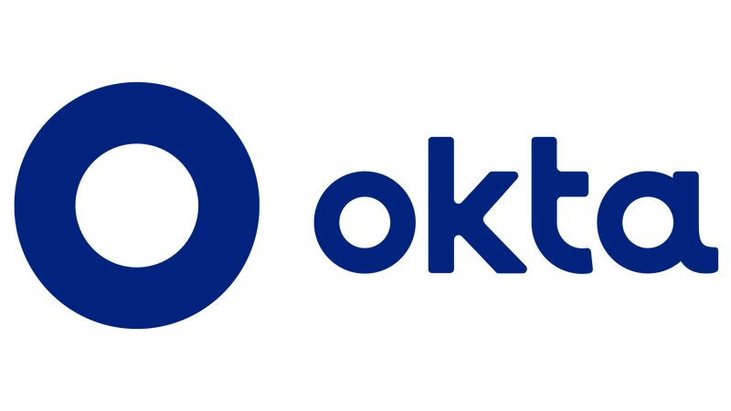

What is the difference between me and the others support engineers?
A support engineer is more then just a service desk guys.
One of my big expertises are with Microsoft, of course Microsoft is a big company with many services with many features, but including many others I already worked with, Teams support, Outlook, Exchange, Microsoft identity administration, Entra ID, Sharepoint and many others. The topic I most like to work with is Power Automate, is a very interesting tool to automate some tasks related to microsoft features ans services.

OKTA is a very famous and big platform for identity management, I use to manage and maintain some identity flow. Supporting OKTA users I was able not only help them to solve their problems but also lean the best practices of IAM (Identity access management)